But first, we motivate such an approximation. Recall the vector space representation of documents and queries introduced in Section 6.3 (page  ). This vector space representation enjoys a number of advantages including the uniform treatment of queries and documents as vectors, the induced score computation based on cosine similarity, the ability to weight different terms differently, and its extension beyond document retrieval to such applications as clustering and classification. The vector space representation suffers, however, from its inability to cope with two classic problems arising in natural languages: synonymy and polysemy. Synonymy refers to a case where two different words (say car and automobile) have the same meaning. Because the vector space representation fails to capture the relationship between synonymous terms such as car and automobile - according each a separate dimension in the vector space. Consequently the computed similarity
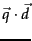 between a query
). This vector space representation enjoys a number of advantages including the uniform treatment of queries and documents as vectors, the induced score computation based on cosine similarity, the ability to weight different terms differently, and its extension beyond document retrieval to such applications as clustering and classification. The vector space representation suffers, however, from its inability to cope with two classic problems arising in natural languages: synonymy and polysemy. Synonymy refers to a case where two different words (say car and automobile) have the same meaning. Because the vector space representation fails to capture the relationship between synonymous terms such as car and automobile - according each a separate dimension in the vector space. Consequently the computed similarity
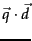 between a query  (say, car) and a document
(say, car) and a document  containing both car and automobile underestimates the true similarity that a user would perceive. Polysemy on the other hand refers to the case where a term such as charge has multiple meanings, so that the computed similarity
overestimates the similarity that a user would perceive. Could we use the co-occurrences of terms (whether, for instance, charge occurs in a document containing steed versus in a document containing electron) to capture the latent semantic associations of terms and alleviate these problems?
containing both car and automobile underestimates the true similarity that a user would perceive. Polysemy on the other hand refers to the case where a term such as charge has multiple meanings, so that the computed similarity
overestimates the similarity that a user would perceive. Could we use the co-occurrences of terms (whether, for instance, charge occurs in a document containing steed versus in a document containing electron) to capture the latent semantic associations of terms and alleviate these problems?
Even for a collection of modest size, the term-document matrix  is likely to have several tens of thousand of rows and columns, and a rank in the tens of thousands as well. In latent semantic indexing (sometimes referred to as latent semantic analysis (LSA) ), we use the SVD to construct a low-rank approximation 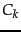 to the term-document matrix, for a value of
is likely to have several tens of thousand of rows and columns, and a rank in the tens of thousands as well. In latent semantic indexing (sometimes referred to as latent semantic analysis (LSA) ), we use the SVD to construct a low-rank approximation 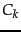 to the term-document matrix, for a value of  that is far smaller than the original rank of
that is far smaller than the original rank of  . In the experimental work cited later in this section,
. In the experimental work cited later in this section,  is generally chosen to be in the low hundreds. We thus map each row/column (respectively corresponding to a term/document) to a
is generally chosen to be in the low hundreds. We thus map each row/column (respectively corresponding to a term/document) to a  -dimensional space; this space is defined by the
-dimensional space; this space is defined by the  principal eigenvectors (corresponding to the largest eigenvalues) of
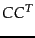 and
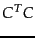. Note that the matrix is itself still an
principal eigenvectors (corresponding to the largest eigenvalues) of
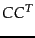 and
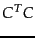. Note that the matrix is itself still an
 matrix, irrespective of
matrix, irrespective of  .
.
Next, we use the new  -dimensional LSI representation as we did the original representation - to compute similarities between vectors. A query vector
-dimensional LSI representation as we did the original representation - to compute similarities between vectors. A query vector  is mapped into its representation in the LSI space by the transformation
is mapped into its representation in the LSI space by the transformation
The fidelity of the approximation of to  leads us to hope that the relative values of cosine similarities are preserved: if a query is close to a document in the original space, it remains relatively close in the
leads us to hope that the relative values of cosine similarities are preserved: if a query is close to a document in the original space, it remains relatively close in the  -dimensional space. But this in itself is not sufficiently interesting, especially given that the sparse query vector
-dimensional space. But this in itself is not sufficiently interesting, especially given that the sparse query vector  turns into a dense query vector 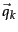 in the low-dimensional space. This has a significant computational cost, when compared with the cost of processing
turns into a dense query vector 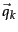 in the low-dimensional space. This has a significant computational cost, when compared with the cost of processing  in its native form.
in its native form.
Worked example. Consider the term-document matrix 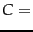
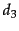 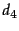 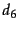 ship 1 0 1 0 0 0 boat 0 1 0 0 0 0 ocean 1 1 0 0 0 0 voyage 1 0 0 1 1 0 trip 0 0 0 1 0 1
Its singular value decomposition is the product of three matrices as below. First we have 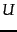 which in this example is:
1 2 3 4 5 ship 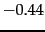 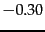 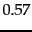 boat 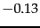 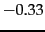 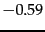 0.00 0.73 ocean 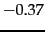 0.00 voyage 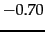 0.35 0.15 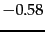 0.16 trip 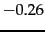 0.65 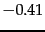 0.58 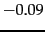
When applying the SVD to a term-document matrix, is known as the SVD term matrix. The singular values are 
2.16 0.00 0.00 0.00 0.00 0.00 1.59 0.00 0.00 0.00 0.00 0.00 1.28 0.00 0.00 0.00 0.00 0.00 1.00 0.00 0.00 0.00 0.00 0.00 0.39
Finally we have 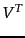, which in the context of a term-document matrix is known as the SVD document matrix:
1 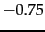 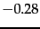 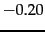 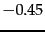 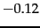 2 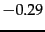 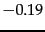 0.63 0.22 0.41 3 0.28 0.45 0.12 4 0.00 0.00 0.58 0.00 0.58 5 0.29 0.63 0.19 0.41 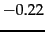
By ``zeroing out'' all but the two largest singular values of 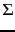, we obtain 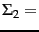
2.16 0.00 0.00 0.00 0.00 0.00 1.59 0.00 0.00 0.00 0.00 0.00 0.00 0.00 0.00 0.00 0.00 0.00 0.00 0.00 0.00 0.00 0.00 0.00 0.00
From this, we compute 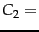
1 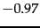 2 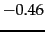 1.00 0.35 0.65 3 0.00 0.00 0.00 0.00 0.00 0.00 4 0.00 0.00 0.00 0.00 0.00 0.00 5 0.00 0.00 0.00 0.00 0.00 0.00
Notice that the low-rank approximation, unlike the original matrix  , can have negative entries. End worked example.
, can have negative entries. End worked example.
Examination of 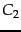 and 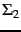 in Example 18.4 shows that the last 3 rows of each of these matrices are populated entirely by zeros. This suggests that the SVD product 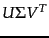 in Equation 241 can be carried out with only two rows in the representations of and ; we may then replace these matrices by their truncated versions
 and 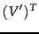. For instance, the truncated SVD document matrix in this example is:
and 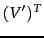. For instance, the truncated SVD document matrix in this example is:
1 2 1.00 0.35 0.65
Figure 18.3 illustrates the documents in in two dimensions. Note also that is dense relative to  .
.
We may in general view the low-rank approximation of  by as a constrained optimization problem: subject to the constraint that have rank at most
by as a constrained optimization problem: subject to the constraint that have rank at most  , we seek a representation of the terms and documents comprising
, we seek a representation of the terms and documents comprising  with low Frobenius norm for the error
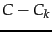. When forced to squeeze the terms/documents down to a
with low Frobenius norm for the error
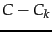. When forced to squeeze the terms/documents down to a  -dimensional space, the SVD should bring together terms with similar co-occurrences. This intuition suggests, then, that not only should retrieval quality not suffer too much from the dimension reduction, but in fact may improve.
-dimensional space, the SVD should bring together terms with similar co-occurrences. This intuition suggests, then, that not only should retrieval quality not suffer too much from the dimension reduction, but in fact may improve.
Dumais (1993) and Dumais (1995) conducted experiments with LSI on TREC documents and tasks, using the commonly-used Lanczos algorithm to compute the SVD. At the time of their work in the early 1990's, the LSI computation on tens of thousands of documents took approximately a day on one machine. On these experiments, they achieved precision at or above that of the median TREC participant. On about 20% of TREC topics their system was the top scorer, and reportedly slightly better on average than standard vector spaces for LSI at about 350 dimensions. Here are some conclusions on LSI first suggested by their work, and subsequently verified by many other experiments.
The experiments also documented some modes where LSI failed to match the effectiveness of more traditional indexes and score computations. Most notably (and perhaps obviously), LSI shares two basic drawbacks of vector space retrieval: there is no good way of expressing negations (find documents that contain german but not shepherd), and no way of enforcing Boolean conditions.
LSI can be viewed as soft clustering by interpreting each dimension of the reduced space as a cluster and the value that a document has on that dimension as its fractional membership in that cluster.